TESSERA
Four tracks, thirteen generators. Evolve the phrases, build them into song forms, let the tracks answer and follow each other, and modulate anything from anything. Small tiles, set into a larger pattern.
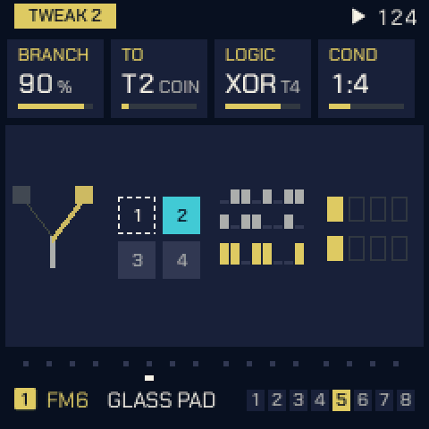
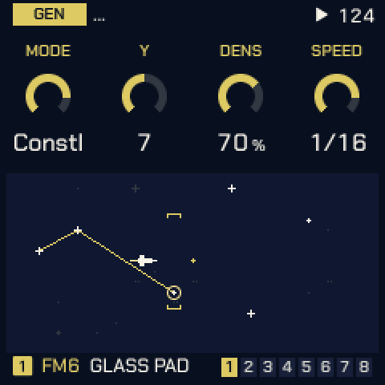
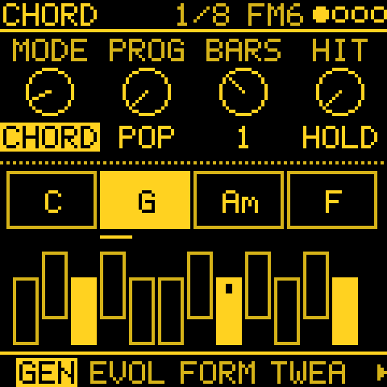
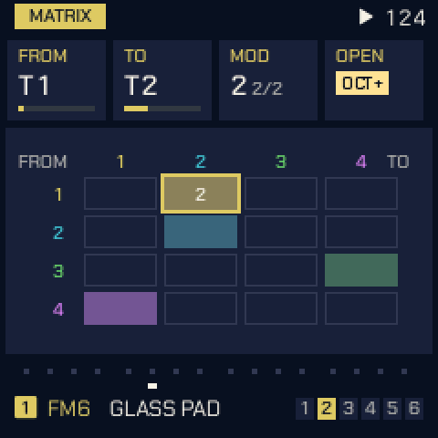
Four minutes of Tessera
The two demo projects, STILL TIDE and KOTO GARDEN, then the pages that shape any generator, then a tour of the other modes. Every sound and every screen in it is the firmware's own.
A sequencer that writes with you
Each track can play its own steps, an arpeggio, or a generator. Everything else is there to shape what they play, and every automatic layer starts off, so nothing moves until you ask it to.
Thirteen generators
Turing, Euclid, Markov, Morph, Atlas, Bounce and Fall, Awake, Poly, Quad, Constellation, Series, Chord and Answer.
Evolve and form
Mutate a phrase every few bars, or build sections A, B and C into forms such as AABA. STEP EVOLVE varies the steps you wrote.
Tracks that talk
Branch hits to another track's sound, combine tracks with AND, OR and XOR, follow another track's pitch, play only on certain bars.
Harmony
One key for every track with Key link. A Chord track plays a progression, or your own played in on the keys, and QNT CHRD makes every other track follow it.
Sixteen cords
Any source to any destination on any track, generators included. Slow organic sources, live marks on the knobs, and a MATRIX to see the patch.
Hold REC and what a generator just played becomes ordinary steps, ready to edit.
Sounds
Six-operator FM with three engine models, the three-oscillator TRIO, ANALOG, PHASE and LOFI, the GURDY hurdy-gurdy, and 808, 909 and SID drum kits.
MIDI out
Every track and generator, each on a channel of its own, and the clock, over USB: Tessera can drive the rest of your setup.
Pick a MODE, turn three knobs
Each generator plays in the track's scale and takes its random choices from the track's seed, so a line you like is always one number away. The screens are drawn by the firmware's own code.
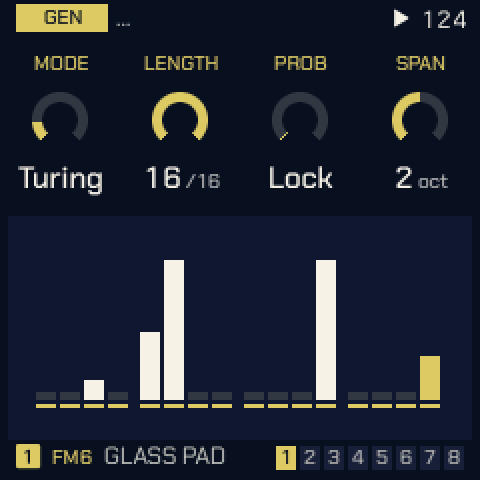
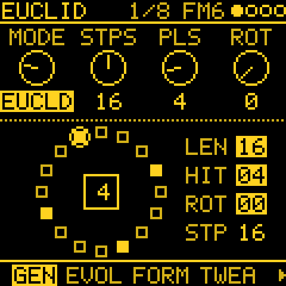
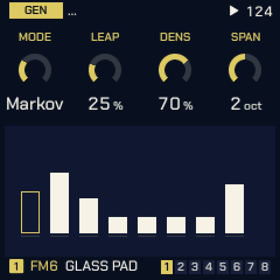
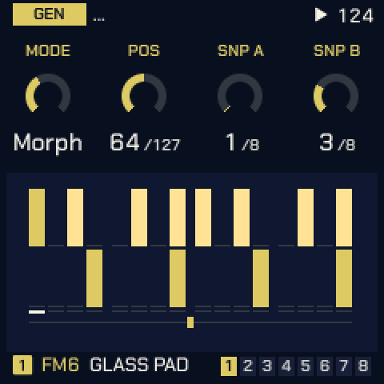
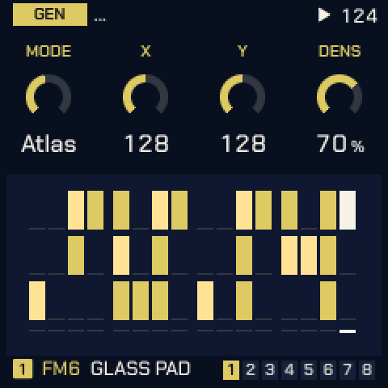
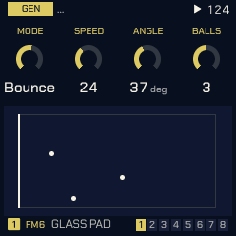
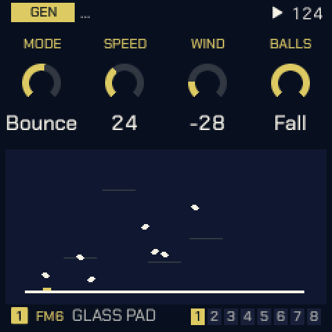
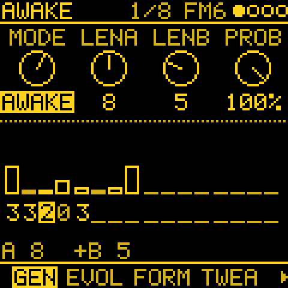
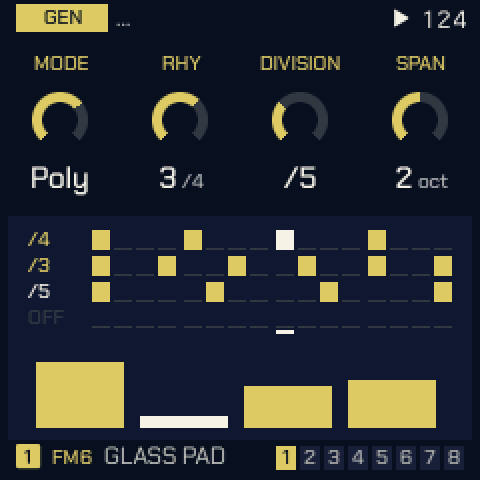
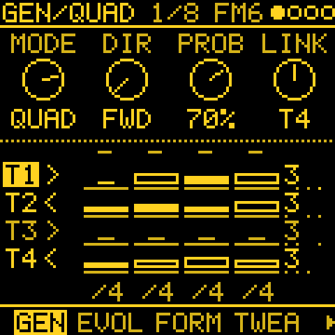
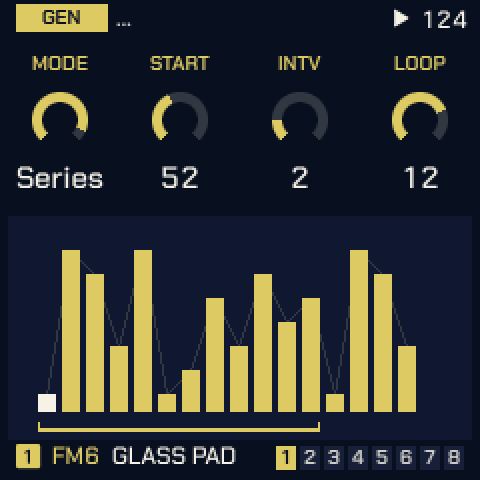
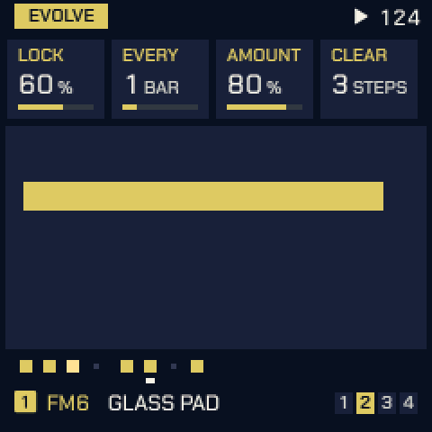
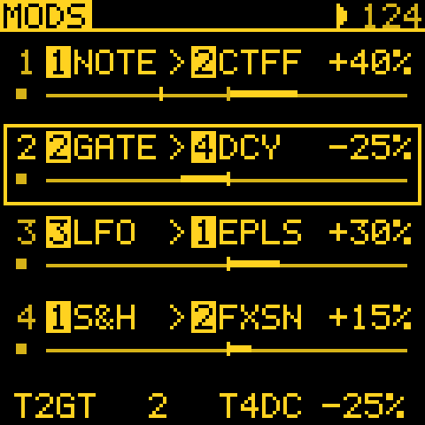
Somewhere to start
Step-by-step patches that use only what's on the device. All of them, and the tips, are in RECIPES.md.
- A first generative patch in a minuteTuring on the bells, Atlas on the 808
- A drone that breathesChord DRONE, TIDE on the filter
- Chords that lead, melodies that followQNT CHRD
- Two tracks answering each otherBRANCH: COIN, TOGGLE, LATCH
- Atlas: a groove with fillsTOMS and the fourth part
- PolyrhythmsPOLY inside a track, QUAD across tracks
- A melody you can come back toConstellation's LOCK, LEN and FILL
- From generator to patternPrint, then STEP EVOLVE
From your browser, in a few minutes
No FM-1 to hand? Try the firmware in your browser, running on an on-screen FM-1.
Connect
Plug the FM-1 straight into your computer by USB, and open the installer in Chrome or Edge.
Flash
Start with the standard build. If your FM-1 crashes with it, use the single-core build from the same release.
Play
Tap SEQ, pick a MODE, press PLAY. Edit sounds from the computer with the web editor.
Do not unplug the FM-1 while it is writing. This is experimental firmware: use it at your own risk.
python3 tools/fm1_install.py tessera-2.1.fwsc (fm1_install.py, needs mido and python-rtmidi).FM-1.fwsc with fm1_install.py. If an update is cut off, see the
recovery guide.Who makes Tessera
I'm Theo Dainis, from New Zealand. I've been using and building synthesisers for the past 15 years, and I'm passionate about modular and open source. Elektron and Mutable Instruments are big influences on me. I love the DIY side: building things, and learning how music hardware works on the inside. Tessera is the sequencer I wanted on the FM-1: modular in a box, a small instrument that writes with you.